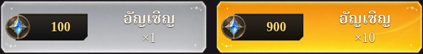
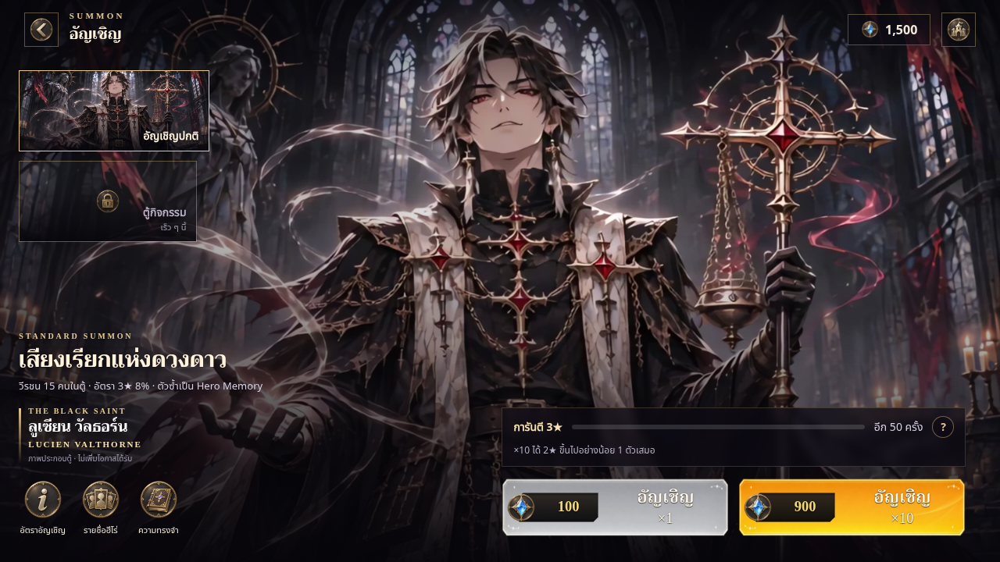
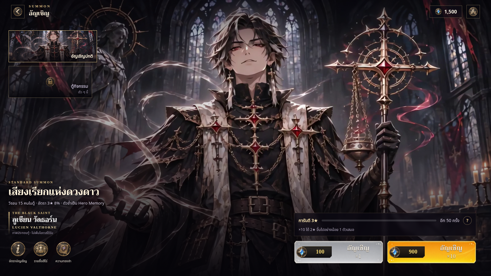

<!doctype html><html lang="th"><meta charset="utf-8"><title>Classic summon controls — reference / actual game</title><style>body{margin:24px;background:#17141c;color:#f7ead2;font:16px/1.6 system-ui}main{max-width:1400px;margin:auto}img{width:100%;display:block}section{display:grid;grid-template-columns:1fr 1fr;gap:24px}figure{margin:0}a{color:#ecd38e}h1,h2{font-weight:500}</style><main><h1>ปุ่มอัญเชิญทองคลาสสิก — แบบที่เลือก / เกมจริง</h1><section><figure><figcaption>แบบที่เลือก · ฟอนต์เล็กลง · ไม่มีข้อความใต้ปุ่ม</figcaption><a href="reference.png"></a></figure><figure><figcaption>เกมจริง · Desktop 1280×720 · ตัดเฉพาะแถวปุ่ม</figcaption><a href="buttons-1280.png"></a></figure></section><h2>เกมจริง 1280×720</h2><a href="game-1280.png"></a><h2>เกมจริง 1600×900</h2><a href="game-1600.png"></a><p><a href="README.md">ขอบเขตและผลตรวจ</a> · <a href="browser-report.json">รายงานการตรวจ</a></p></main></html>
